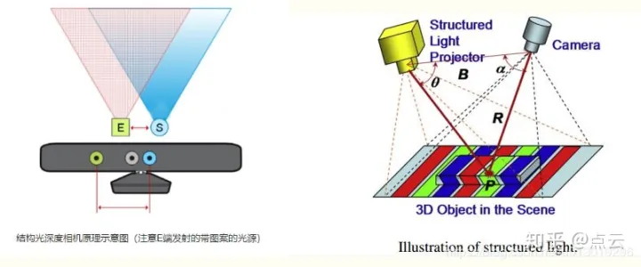
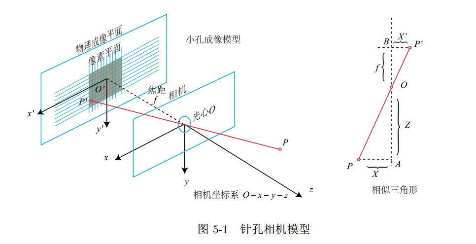
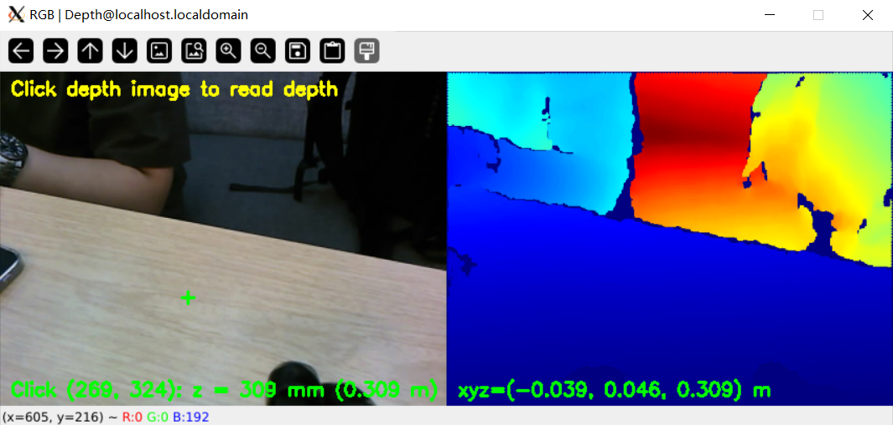

深度信息与 3D 检测
平面照片终于长出了"第三只眼"：HP60C 双目相机左右分屏显示 RGB 与深度伪彩，点击任意像素读出真实毫米深度，并反投影成相机坐标系下的 3D 点。
01问题引入：照片里的"远"是多远？
前几课里我们框人、抠人、跟踪人，但所有输出都扁平地压在像素平面上——画面里"小孩"比"远处的大人"像素更高，你能判断谁更近吗？人类靠双眼视差本能地感知远近，摄像头却只给颜色。要让机器人避障、量距、抓取，必须把 (u, v) 像素升级成 (x, y, z) 米制坐标。
HP60C 深度相机直接输出一张与 RGB 对齐的深度图：每个像素存的不再是颜色，而是"该点离镜头多少毫米"。但毛细坑不少：深度值是 uint16 毫米（不是米！）、0 表示无效、读图必须保 16 位、点击坐标还得除以显示缩放——每一步踩错，测距就差着 1000 倍或偏出半米。
02原理通俗讲解：给每张照片配一张"高度成绩单"
把深度图想成给场景拍的另一张照片，只不过底片上记的不是颜色，而是距离。近处的物体"分数"低，远处的高；测不到的地方留 0（缺考）。理解它只需要三步常识：
深度是 uint16 存毫米。工程里统一只在最后一步 z = depth × 0.001 换算——中途混用两种单位，误差是灾难性的 1000 倍。
反光、太近、超出量程的像素深度为 0。任何统计（min/max 归一化、求均值）必须先剔除 0，否则 0 会被当成"贴在镜头上"参与计算，画面一朵黑花。
深度图人眼看不出远近，先 min-max 归一化到 8bit 再 applyColorMap(jet)：蓝远红近，一眼扫出空间层次。归一化时 0 值被屏蔽。
相机就是针孔模型：光线穿过"针孔"落在像素 (u, v)。反过来，已知 z 和 (u, v)，射线方向就唯一确定，除以焦距减主点即得 x, y——这就是反投影。
反投影公式配一次具体数值更好记：点击 (u, v) 读到 z=309mm，内参 cx=328.3、fx=608.4：
x = (u − cx) × z / fx = (269 − 328.3) × 0.309 / 608.4 ≈ −0.039 m——一个小小的负号告诉你：这点在镜头中线左侧 3.9 厘米。y 同理（v 减 cy 除 fy），右手系、单位米。
03关联知识点
必须 cv2.imread(p, IMREAD_UNCHANGED)——默认 8 位读取会把 309mm 截成 53，误差隐蔽致命。
深度流与 RGB 来自 ascamera 同步发布；配置 source.mode=ros / display 本地预览两用。
检测框中心 + 框内深度中值 = 目标的 3D 定位；人或物的"距离属性"随帧可得。
全图逐像素反投影即得点云；测距仪、越界告警、机械臂抓取位姿都是直接延伸。
- 配置文件：
config/depth3d_config.yaml（depth.scale=0.001、invalid_value=0、colormap=jet、source.mode=ros、stream_name=depth.mjpg）。 - 工程位置：
vision/08_depth_3d_detection/；24 项单测覆盖读图、归一化、反投影三段。 - 首帧保护：rgb.mean() < 5 的黑帧会被跳过，避免初始化瞬间污染统计。
04实验目标
--ros 模式 MJPEG :8080/depth.mjpg 稳定输出，纯 CPU 即可（无 NPU 参与）。05实验环境与准备
| 类别 | 内容 |
|---|---|
| 硬件 | 实验箱 B2 + HP60C 深度相机（RGB-D 双输出）；本机回放模式可只用样例数据 |
| 软件 | Python 3、OpenCV（imread 常量 / applyColorMap / mouse 回调）、ROS2（可选，--display 单机即可） |
| 数据 | 样例 RGB + depth 序列（depth 为 uint16 PNG，单位 mm）；或 HP60C 实时话题 ≈25Hz |
| 相机内参 | 640×480：fx=608.39958 fy=611.20714 cx=328.30096 cy=226.46483（出厂标定，写在配置里） |
| 关键配置 | config/depth3d_config.yaml：depth.scale=0.001、invalid_value=0、colormap=jet、source.mode=ros、display_scale≈0.666、stream_name=depth.mjpg |
| 无 NPU | 本实验纯 CPU——刻意为之：深度管线的瓶颈在 IO 与显示，不在算力 |
ros2 launch ascamera hp60c.launch.py（主）与 ros2 launch car1_peripherals depth_camera.launch.py（备）。先确认哪个在你的镜像里存在，再选对应入口设计你的测距交互。06动画讲解：一次点击的反投影之旅
07互动讲解：测距仪实验台
操作建议：正常态下把 u 拖过 cx=328 观察 x 由负转正——这就是"跨过光轴"；把 z 拖到 0 输出 invalid 警告（0 值陷阱）；再逐个勾选两个"注入坑"，对比同一点击输出的 xyz 差多少个数量级——错误不报异常，只让结果荒谬，这是 3D 代码最有迷惑性的地方。
08实操步骤
pytest tests/ -v tests/test_depth_io.py ...... [ 9/24] tests/test_norm_map.py ...... [16/24] tests/test_backproj.py ...... [24/24] passed
# 必须 IMREAD_UNCHANGED，否则 309mm 被 8bit 截断成 53 depth = cv2.imread("depth_0001.png", cv2.IMREAD_UNCHANGED) assert depth.dtype == np.uint16 # 单位：毫米！ # 0 是无效值，归一化前先屏蔽 valid = depth > 0 dmax = depth[valid].max() norm = np.zeros_like(depth, np.float32) norm[valid] = depth[valid] / dmax # min-max 归一化(已在0..1) u8 = (norm * 255).astype(np.uint8) # applyColorMap 只吃 8bit color = cv2.applyColorMap(u8, cv2.COLORMAP_JET)
# 拼接：左 RGB | 右 伪彩，display_scale=0.666 缩放预览 canvas = np.hstack([rgb_s, depth_s]) def on_mouse(evt, x, y, flags, param): if evt == cv2.EVENT_LBUTTONDOWN: half = canvas.shape[1] // 2 # 右栏先减左栏宽 if x >= half: x -= half # 屏幕坐标 -> 传感器 640x480 坐标 u = int(x / display_scale); v = int(y / display_scale) z_mm = int(depth[v, u]) # 直接查 uint16 if z_mm == 0: print("invalid (z=0)"); return z = z_mm * 0.001 # 只在此处换算成米 X = (u - CX) * z / FX; Y = (v - CY) * z / FY print(f"Click ({u}, {v}): z = {z_mm} mm ({z:.3f} m) " f"xyz=({X:.3f}, {Y:.3f}, {z:.3f}) m")
python src/app.py --config config/depth3d_config.yaml --display Click (269, 324): z = 309 mm (0.309 m) xyz=(-0.039, 0.046, 0.309) m
# 终端 1（主） ros2 launch ascamera hp60c.launch.py # 备选：ros2 launch car1_peripherals depth_camera.launch.py # 终端 2 python src/app.py --config config/depth3d_config.yaml --ros [app] depth topic ~25 Hz, skip black frame (rgb.mean<5) http://<board-ip>:8080/depth.mjpg
🛠️ 指导书步骤截图（实验指导书 · 2 图）


✅ 实验现象截图（实验指导书 · 1 图）

09重点与易错点
Click (269, 324): z = 309 mm xyz=(-0.039, 0.046, 0.309) m。| 现象 | 根因 | 处理 |
|---|---|---|
| 数值差 1000 倍 | mm 与 m 混用 | 全链路用 mm，仅反投影处 ×0.001 |
| 深度图全黑/花屏 | 默认 8bit 读取截断 uint16 | IMREAD_UNCHANGED + 断言 dtype |
| 点击读数错位 | 屏幕坐标未还原（display_scale/右栏偏移） | 先减半宽再 ÷0.666 |
| 归一化后一片死黑 | 0 值参与 max 或 min-max 被 0 拉爆 | valid 掩码屏蔽 invalid_value=0 |
| x/y 整体平移几厘米 | 内参 cx/cy 用了别的分辨率标定 | 核对 640×480 出厂内参 |
| 偶发全黑帧进入统计 | 初始化首帧未过滤 | rgb.mean()<5 跳帧（已有保护勿删） |
| 远程显示卡顿 | 全分辨率伪彩推流 | 确认 display_scale≈0.666 生效 |
| 深度数据滞后/断流 | 话题频率与缓存配置 | ROS 模式核对 ~25Hz 与 source.mode=ros |
- ✅ 24 项单测全绿（16bit 读图、屏蔽 0 归一化、反投影数值比对）。
- ✅ 本地样例输出与讲义基准值逐字符一致。
- ✅ 双栏显示 + 点击测距 + (x,y,z) 打印三者联通。
- ✅ 上板 --ros 模式 MJPEG 稳定出流。
10总结与思考
16bit 深度读取 → 伪彩 → 点击反投影 → 米制坐标全链。
内参四元组是像素与世界之间唯一的桥，公式只有两行。
单位单一化、无效值先行剔除、每一次坐标变换都注明参照系。
对基准输出确认正确，再主动注入四类坑确认"能识别错误"。